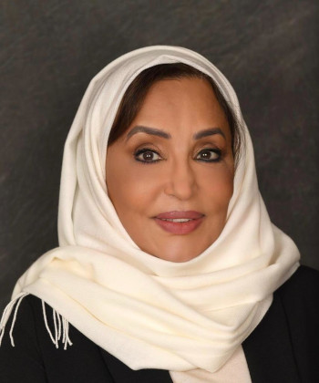

Team
The Center for Economic Research and Consulting harnesses the knowledge of experts in economics, advanced modern econometrics, law, policy, artificial intelligence, and data science. The center brings together a distinguished team that includes graduates of the Custodian of the Two Holy Mosques Program, from the best international universities. Our experts play a vital role in our forward thinking and vision as they are part of the important transformation of Saudi Arabia across various sectors.
In addition, we have strong collaborations with a network of leading associates, business partners and senior policymakers and decision makers.
Professor Nourah Alyousef
CEO and founder
Nourah Alyousef is a Professor of Economics at King Saud University in Riyadh, and the chair of the Saudi Economic Association since 2017. Her expertise lies in econometrics, energy economics and mathematical economics.
She was a member of the Shoura Council between 2016 and 2020, and served as an advisor to Majlis Alshura prior to that. She served as Vice Dean of the Economics Department and College of Law and Political Science between 2010 and 2015.
Professor Alyousef has also worked as an adviser to prestigious regional institutions including the Ministry of Industry and Mineral Resources between 1999 and 2007, the Gulf Cooperation Council's Secretariat from 2003 to 2008, and the Saudi Arabian General Investment Authority during 2002 and 2003.
Professor Alyousef holds a PhD from the University of Surrey. She obtained a bachelor's and a master's degree in business administration from Bellarmine University, Louisville, USA. She also holds a master's degree in economics from King Saud University. She has conducted post-doctoral work at the Oxford Institute for Energy Studies, and the Secretariat of OPEC.
Alyousef was named one of the top 10 Saudi women in the field of economics in the December 2019 issue of the leading Arab women's magazine, Sayidaty, chosen for her active contribution to the finance and business worlds locally and regionally.